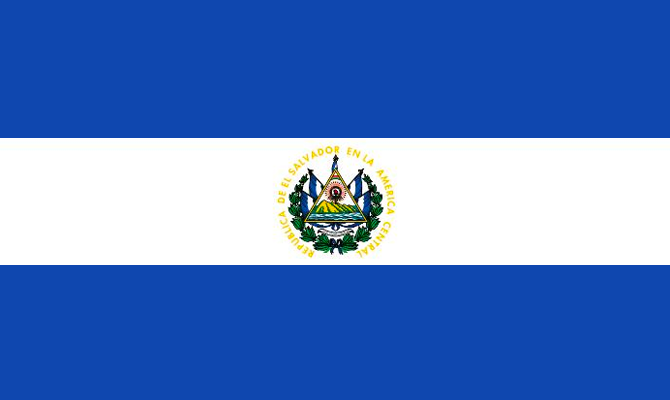
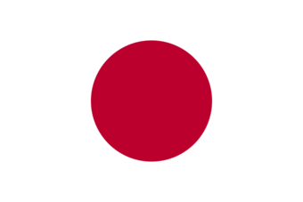
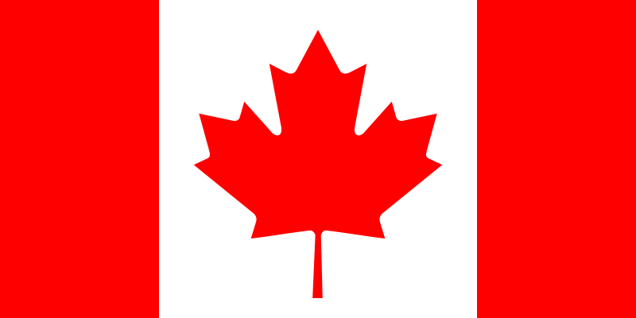
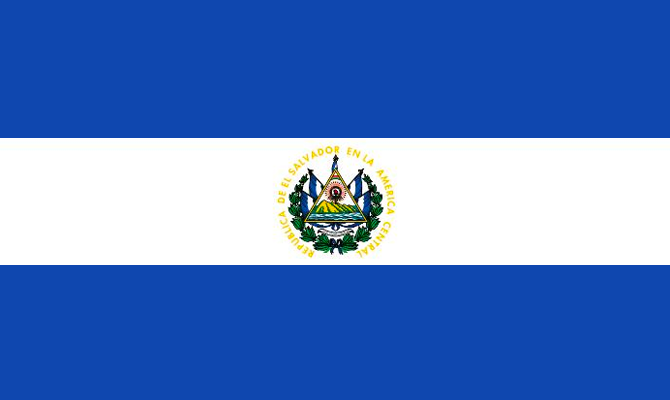
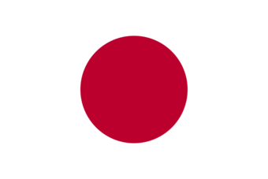
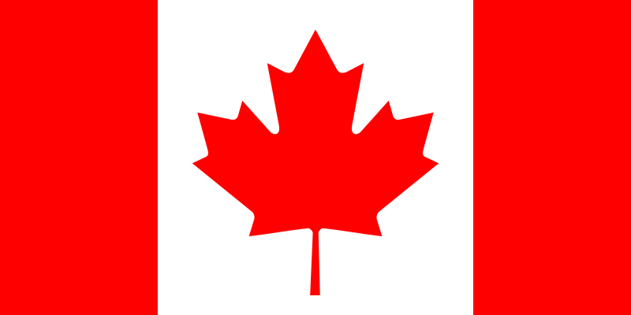
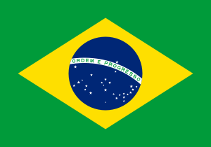
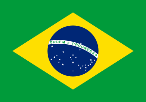

 

Costa Rica es un país de América Central con una geografía accidentada, que incluye bosques tropicales y costas en el Caribe y el Pacífico.
Costa Rica es conocida por sus playas, sus volcanes y su biodiversidad. Aproximadamente un cuarto de su área corresponde a selvas protegidas repletas de fauna.
El Salvador es una pequeña nación de América Central. Es conocida por sus playas en el océano Pacífico, los sitios de surf y el paisaje montañoso.
Su Ruta de las Flores es un camino serpenteante que pasa por plantaciones de café, bosques tropicales con cascadas
Japón es una nación insular del océano Pacífico con densas ciudades, palacios imperiales, parques nacionales montañosos y miles de santuarios y templos.
Canadá es el país norteamericano que se extiende desde los Estados Unidos
en el sur hasta el círculo polar ártico en el norte.
España, país de la península ibérica de Europa,
incluye 17 regiones autónomas con diversas características geográficas y culturales.
Brasil es un vasto país de Sudamérica que se extiende desde la Cuenca del Amazonas en el norte hasta los viñedos
y las enormes cataratas del Iguazú en el sur.